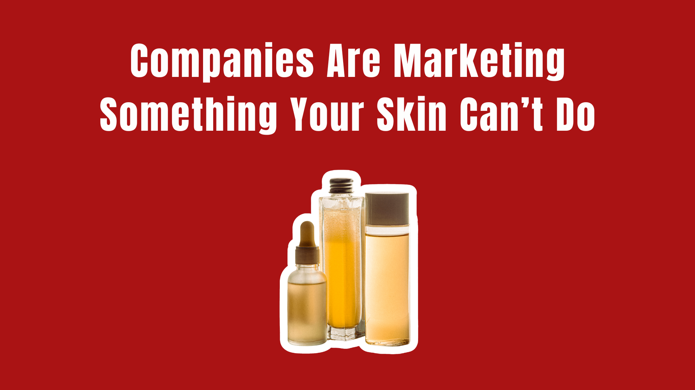
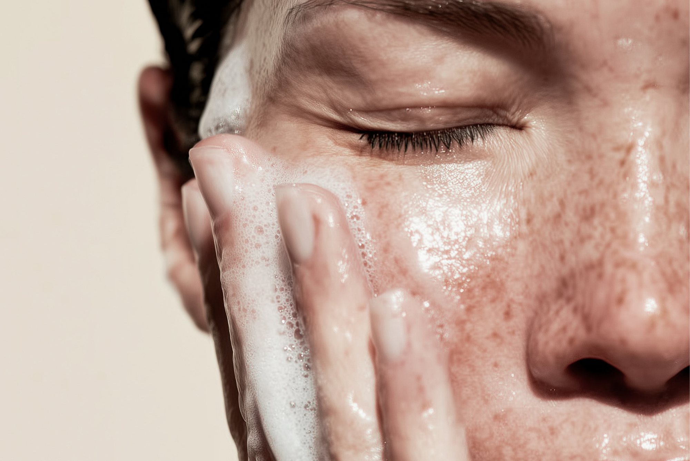

There’s a certain kind of beauty product that seems to promise a fresh start. A detox mask. A detox cleanser. A detox serum. A detox facial.
Maybe it contains charcoal. Maybe it contains clay. Maybe it has some combination of antioxidants, botanical extracts, or ingredients you can barely pronounce. The packaging usually features some variation of the same visual language: black, green, earthy, clean.
And the message is pretty straightforward. Your skin has toxins in it. This product will get them out.
Except there’s a problem with that story.
The word “detox” has become one of beauty’s favorite marketing shortcuts. It makes a product sound cleansing, purifying, restorative, and—most importantly—necessary.
But when you strip away the marketing language, the science is considerably less exciting.
So What Does “Detox” Actually Mean?
In a medical context, detoxification refers to the body’s processes for dealing with potentially harmful substances and waste.
Your body already has systems for this.
The liver processes and transforms many substances so they can be eliminated. The kidneys filter the blood and remove waste through urine. Other organs and systems, including the lungs and digestive tract, also play important roles in eliminating substances from the body.
In other words, your body isn’t sitting around waiting for you to purchase a $42 “detoxifying” serum.
It is doing this work continuously.
And this is where beauty marketing gets a little creative.
Because “detox” sounds much more compelling on a product label than “removes excess oil and dead skin cells.”
Your Skin Doesn’t Need to Be Detoxed
Let’s say you put on a charcoal mask. After 10 minutes, you wash it off. Your skin feels cleaner. Your pores may look less noticeable. Your face might feel smoother.
Something happened. But did the mask remove toxins from your body?
No.
What it can do is interact with things sitting on the surface of your skin, including excess oil, dirt, and other debris. Cleansing and exfoliating can absolutely change how your skin looks and feels.
That is different from detoxification.
There is no established medical process called “skin detox” in which a skincare product pulls accumulated toxins out of your skin. Medical sources consistently note that the skin plays only a limited role in the body’s detoxification process, with the liver and kidneys doing far more of the work.
So when a product says it “detoxes your skin,” the important question is: detoxes it from what?
If the answer is never clearly stated, that’s worth noticing.
The Charcoal Problem
Charcoal is probably one of the best examples of how the word “detox” became attached to beauty.
Activated charcoal has legitimate uses in certain medical settings because of its ability to bind certain substances in the gastrointestinal tract.
That does not mean putting charcoal on your face will pull toxins out of your bloodstream.
Yet charcoal became almost synonymous with “detox” in skincare.
At some point, the color itself started doing some of the marketing.
And it’s a clever visual shortcut. Black feels like it must be pulling something out.
The dirty-looking mask that you peel or rinse away makes the whole process feel even more convincing.
But a product looking like it removed something isn’t evidence that it removed a toxin.
What About Pollution?
This is where the claim gets a little more complicated.
Your skin is exposed to the environment all day. Pollution, smoke, UV radiation, and other environmental factors can contribute to oxidative stress and skin damage. Protecting your skin from those exposures is a legitimate part of skincare.
But “protecting your skin from environmental damage” and “detoxing your skin” are not the same thing.
An antioxidant-containing product, for example, may help counter oxidative processes. A cleanser can remove particulate matter and grime from the surface of your skin. Sunscreen can reduce UV exposure.
Those are useful functions.
Calling them a “detox” is where the marketing language starts stretching the science.
But I Feel Better After a Detox
This is probably the most convincing part of the whole trend.
People really can feel better after simplifying their routine, drinking more water, eating more nutritious foods, sleeping better, or temporarily cutting back on alcohol and highly processed foods.
But feeling better doesn’t automatically mean toxins were removed.
The same thing applies to skincare.
If you stop using six irritating products and switch to a gentle cleanser and moisturizer, your skin may look dramatically better.
That’s not a detox.
That’s your skin barrier getting a break.
If you use a clay mask and your face feels less oily afterward, the mask may have absorbed some surface oil.
That’s not a detox either.
It’s a mask doing what a mask does.

The Word “Detox” Is Doing a Lot of Work
This is the part consumers should pay attention to.
“Detox” is a powerful word because it creates a problem before offering the solution.
Your skin has toxins. Your skin is congested. Your skin needs to be purified. And fortunately, this little bottle can fix it.
Suddenly, a normal skincare routine starts feeling inadequate. You aren’t just cleansing your face anymore. You’re “removing toxins.” You aren’t washing away excess oil. You’re “purifying.” You aren’t using an antioxidant serum. You’re “defending against environmental toxins.”
Some of those underlying skincare functions can be completely legitimate. It’s the leap from supporting or cleansing the skin to detoxifying the body that isn’t supported.
Even advertising regulators have flagged broad detoxification claims when there isn’t evidence that a product actually removes toxins from the body.
So, Does “Detox Skincare” Do Anything?
Sometimes.
Just usually not the thing the word “detox” makes you think it’s doing.
- A detox cleanser may cleanse.
- A detox mask may absorb excess oil.
- An antioxidant serum may help protect against oxidative stress.
- An exfoliant may remove dead skin cells from the surface.
- A moisturizer may support the skin barrier.
None of those functions require the word “detox.”
And that’s precisely why the term is so useful to beauty marketing.
It takes an ordinary skincare benefit and gives it a much bigger, more mysterious-sounding job description.
The Beauty Industry Loves a Reset
“Reset” is another word that has become popular for the same reason.
Your skin is overwhelmed. Your hair is damaged. Your body is full of toxins. Your routine needs a reset.
The implication is that something has gone wrong inside you—and buying the right product can restore everything to its original state.
It’s a compelling story because nobody wants to feel like their body is working against them. But your body isn’t waiting for a detox weekend.
It’s already working around the clock. Your liver and kidneys don’t need a charcoal mask to remind them to do their jobs.
And your skin doesn’t need to be “purified” every Sunday because you had a stressful week.
What Your Skin Actually Needs
The boring answer is usually the more useful one.
- Cleanse your skin without unnecessarily stripping it.
- Moisturize when needed.
- Protect it from UV exposure.
- Use evidence-backed ingredients for specific concerns.
- Avoid products that consistently irritate you.
And if your skin is suddenly breaking out, becoming extremely dry, itchy, or inflamed, figure out why instead of assuming it needs a detox.
Sometimes the answer is hormonal changes. Sometimes it’s irritation. Sometimes it’s over-exfoliation. Sometimes it’s a new product. Sometimes it’s an underlying skin condition that needs actual medical attention.
None of those problems are solved by making the packaging darker and adding the word “detox.”
The Bottom Line
The next time you see “detox” printed on a beauty product, don’t automatically assume it means the product is useless.
Instead, ask a much better question:
If it’s removing dirt, oil, makeup, or dead skin cells, great.
If it’s helping protect against environmental stressors, also great.
But if the product claims to pull unspecified “toxins” out of your skin or body, that’s where the marketing deserves a closer look.
Because sometimes the most scientific-looking word on the bottle is the one doing the least scientific work.
The Beauty Insider Take
“Detox” is not a formulation category. It’s a positioning category. Inside the industry, it gets attached to a product late in the process, after the formula already exists, because it makes a cleanser or a clay mask sound like a treatment instead of a routine step.
Notice what the word never has to do: name the toxin, name the mechanism, or name the outcome. That vagueness is the feature. A claim specific enough to test is a claim specific enough to challenge.
The tell is the visual system. Black packaging, green botanicals, the mask that rinses off looking dirty. When the proof is aesthetic rather than measurable, you’re looking at a story about your skin, not a report on it.
Buy the function, not the verb. If a “detox” cleanser cleanses well and your skin likes it, keep using it. Just know you’re paying for a cleanser.
Sources: American Academy of Dermatology — skin care and cleansing guidance; National Institutes of Health — overview of liver and kidney function in metabolizing and eliminating substances; published reviews on activated charcoal in clinical use; advertising standards rulings on detoxification claims in cosmetics.